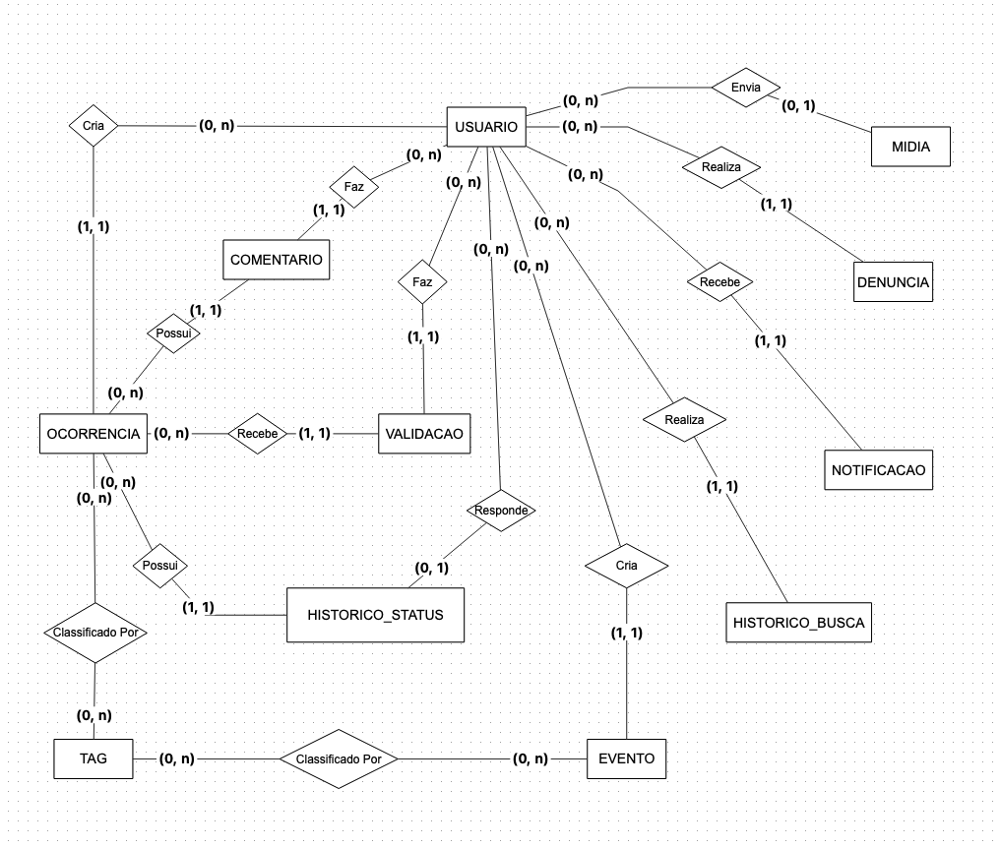

Modelagem Lógica do Banco de Dados
Visão Geral
O modelo lógico traduz as entidades e relacionamentos do modelo conceitual em tabelas relacionais, definindo tipos de dados, chaves primárias (PK), chaves estrangeiras (FK) e restrições de integridade. O modelo é independente de banco de dados específico, mas segue a notação SQL padrão.
A tabela usuario utiliza a matrícula universitária como chave primária natural, sendo ela propagada como chave estrangeira nas demais tabelas sob o nome usuario_matricula.
Visualização do Diagrama
Modelo Entidade-Relacionamento

Descrição das Tabelas
usuario
Armazena os dados de cadastro e autenticação de cada membro da plataforma. A matrícula universitária é usada como chave primária natural.
| Coluna | Tipo | Restrições | Descrição |
|---|---|---|---|
| matricula | VARCHAR(20) | PK, NOT NULL | Matrícula universitária (ex: 211066196) |
| nome | VARCHAR(100) | NOT NULL | Nome completo |
| VARCHAR(255) | UNIQUE, NOT NULL | Endereço de e-mail | |
| senha_hash | VARCHAR(255) | NOT NULL | Hash da senha (ex: bcrypt) |
| tipo | VARCHAR(10) | NOT NULL | membro ou admin |
| status | VARCHAR(10) | NOT NULL | ativo, inativo ou pendente |
| email_verificado | BOOLEAN | NOT NULL, DEFAULT false | Status de verificação de e-mail |
| created_at | TIMESTAMP | NOT NULL | Data de criação da conta |
| updated_at | TIMESTAMP | NOT NULL | Data da última atualização |
ocorrencia
Armazena os registros de problemas de segurança e infraestrutura com geolocalização.
| Coluna | Tipo | Restrições | Descrição |
|---|---|---|---|
| id | UUID | PK, NOT NULL | Identificador único |
| titulo | VARCHAR(200) | NOT NULL | Título da ocorrência |
| descricao | TEXT | — | Descrição detalhada |
| tipo | VARCHAR(20) | NOT NULL | Categoria do problema |
| status | VARCHAR(15) | NOT NULL, DEFAULT pendente |
Estado atual |
| prioridade | VARCHAR(10) | NOT NULL, DEFAULT media |
Nível de urgência |
| latitude | DECIMAL(10,8) | NOT NULL | Latitude da ocorrência |
| longitude | DECIMAL(11,8) | NOT NULL | Longitude da ocorrência |
| anonimo | BOOLEAN | NOT NULL, DEFAULT false | Reporte anônimo |
| usuario_matricula | VARCHAR(20) | FK → usuario.matricula, NULLABLE |
Autor (nulo se anônimo) |
| created_at | TIMESTAMP | NOT NULL | Data do registro |
| updated_at | TIMESTAMP | NOT NULL | Última atualização |
evento
Armazena os eventos acadêmicos, culturais e esportivos publicados no mapa.
| Coluna | Tipo | Restrições | Descrição |
|---|---|---|---|
| id | UUID | PK, NOT NULL | Identificador único |
| titulo | VARCHAR(200) | NOT NULL | Nome do evento |
| descricao | TEXT | — | Descrição detalhada |
| categoria | VARCHAR(15) | NOT NULL | Tipo do evento |
| data_inicio | TIMESTAMP | NOT NULL | Data/hora de início |
| data_fim | TIMESTAMP | — | Data/hora de encerramento |
| latitude | DECIMAL(10,8) | NOT NULL | Latitude do local |
| longitude | DECIMAL(11,8) | NOT NULL | Longitude do local |
| link_externo | VARCHAR(500) | — | URL com mais informações |
| status | VARCHAR(10) | NOT NULL, DEFAULT ativo |
Estado do evento |
| usuario_matricula | VARCHAR(20) | FK → usuario.matricula, NOT NULL |
Autor do evento |
| created_at | TIMESTAMP | NOT NULL | Data de cadastro |
| updated_at | TIMESTAMP | NOT NULL | Última atualização |
midia
Armazena referências para arquivos de imagem vinculados a ocorrências ou eventos.
| Coluna | Tipo | Restrições | Descrição |
|---|---|---|---|
| id | UUID | PK, NOT NULL | Identificador único |
| url | VARCHAR(500) | NOT NULL | Caminho/URL do arquivo |
| tipo | VARCHAR(10) | NOT NULL, DEFAULT imagem |
Tipo de arquivo |
| entidade_tipo | VARCHAR(15) | NOT NULL | ocorrencia ou evento |
| entidade_id | UUID | NOT NULL | ID do registro pai |
| usuario_matricula | VARCHAR(20) | FK → usuario.matricula, NULLABLE |
Usuário que fez o upload |
| created_at | TIMESTAMP | NOT NULL | Data do envio |
comentario
Armazena os comentários de usuários em ocorrências.
| Coluna | Tipo | Restrições | Descrição |
|---|---|---|---|
| id | UUID | PK, NOT NULL | Identificador único |
| conteudo | TEXT | NOT NULL | Texto do comentário |
| usuario_matricula | VARCHAR(20) | FK → usuario.matricula, NOT NULL |
Autor |
| ocorrencia_id | UUID | FK → ocorrencia.id, NOT NULL |
Ocorrência comentada |
| created_at | TIMESTAMP | NOT NULL | Data de publicação |
| updated_at | TIMESTAMP | NOT NULL | Última edição |
validacao
Armazena os upvotes de usuários em ocorrências, confirmando sua veracidade.
| Coluna | Tipo | Restrições | Descrição |
|---|---|---|---|
| id | UUID | PK, NOT NULL | Identificador único |
| usuario_matricula | VARCHAR(20) | FK → usuario.matricula, NOT NULL |
Usuário que validou |
| ocorrencia_id | UUID | FK → ocorrencia.id, NOT NULL |
Ocorrência validada |
| created_at | TIMESTAMP | NOT NULL | Data da validação |
Índice único:
(usuario_matricula, ocorrencia_id)— impede validações duplicadas do mesmo usuário.
historico_status
Registra cada transição de status de uma ocorrência para auditoria completa.
| Coluna | Tipo | Restrições | Descrição |
|---|---|---|---|
| id | UUID | PK, NOT NULL | Identificador único |
| ocorrencia_id | UUID | FK → ocorrencia.id, NOT NULL |
Ocorrência afetada |
| status_anterior | VARCHAR(15) | NULLABLE | Status antes da mudança |
| status_novo | VARCHAR(15) | NOT NULL | Novo status atribuído |
| responsavel_matricula | VARCHAR(20) | FK → usuario.matricula, NULLABLE |
Responsável pela mudança |
| observacao | TEXT | — | Justificativa ou nota |
| created_at | TIMESTAMP | NOT NULL | Momento da mudança |
tag
Armazena palavras-chave utilizadas para categorizar e facilitar a busca de registros.
| Coluna | Tipo | Restrições | Descrição |
|---|---|---|---|
| id | UUID | PK, NOT NULL | Identificador único |
| nome | VARCHAR(50) | UNIQUE, NOT NULL | Texto da tag |
| created_at | TIMESTAMP | NOT NULL | Data de criação |
ocorrencia_tag
Tabela de junção para o relacionamento N:M entre ocorrencia e tag.
| Coluna | Tipo | Restrições | Descrição |
|---|---|---|---|
| ocorrencia_id | UUID | PK, FK → ocorrencia.id |
Referência à ocorrência |
| tag_id | UUID | PK, FK → tag.id |
Referência à tag |
evento_tag
Tabela de junção para o relacionamento N:M entre evento e tag.
| Coluna | Tipo | Restrições | Descrição |
|---|---|---|---|
| evento_id | UUID | PK, FK → evento.id |
Referência ao evento |
| tag_id | UUID | PK, FK → tag.id |
Referência à tag |
denuncia
Armazena as denúncias de conteúdo inadequado ou falso realizadas por usuários.
| Coluna | Tipo | Restrições | Descrição |
|---|---|---|---|
| id | UUID | PK, NOT NULL | Identificador único |
| motivo | TEXT | NOT NULL | Descrição do motivo |
| usuario_matricula | VARCHAR(20) | FK → usuario.matricula, NOT NULL |
Usuário que denunciou |
| entidade_tipo | VARCHAR(15) | NOT NULL | ocorrencia, evento ou comentario |
| entidade_id | UUID | NOT NULL | ID do conteúdo denunciado |
| status | VARCHAR(10) | NOT NULL, DEFAULT pendente |
Estado da análise |
| created_at | TIMESTAMP | NOT NULL | Data da denúncia |
notificacao
Armazena as notificações geradas pelo sistema para os usuários.
| Coluna | Tipo | Restrições | Descrição |
|---|---|---|---|
| id | UUID | PK, NOT NULL | Identificador único |
| usuario_matricula | VARCHAR(20) | FK → usuario.matricula, NOT NULL |
Destinatário |
| mensagem | TEXT | NOT NULL | Conteúdo da notificação |
| lida | BOOLEAN | NOT NULL, DEFAULT false | Status de leitura |
| entidade_tipo | VARCHAR(15) | NULLABLE | ocorrencia, evento ou comentario |
| entidade_id | UUID | NULLABLE | ID do registro de origem |
| created_at | TIMESTAMP | NOT NULL | Data de criação |
historico_busca
Registra o histórico de buscas realizadas por usuários autenticados.
| Coluna | Tipo | Restrições | Descrição |
|---|---|---|---|
| id | UUID | PK, NOT NULL | Identificador único |
| usuario_matricula | VARCHAR(20) | FK → usuario.matricula, NOT NULL |
Usuário que buscou |
| query | VARCHAR(500) | NOT NULL | Termo pesquisado |
| filtros | JSON | NULLABLE | Filtros aplicados (tipo, data, localização) |
| created_at | TIMESTAMP | NOT NULL | Data da busca |
Resumo das Chaves Estrangeiras
| Tabela | Coluna | Referencia |
|---|---|---|
ocorrencia |
usuario_matricula |
usuario.matricula |
evento |
usuario_matricula |
usuario.matricula |
midia |
usuario_matricula |
usuario.matricula |
comentario |
usuario_matricula |
usuario.matricula |
comentario |
ocorrencia_id |
ocorrencia.id |
validacao |
usuario_matricula |
usuario.matricula |
validacao |
ocorrencia_id |
ocorrencia.id |
historico_status |
ocorrencia_id |
ocorrencia.id |
historico_status |
responsavel_matricula |
usuario.matricula |
ocorrencia_tag |
ocorrencia_id |
ocorrencia.id |
ocorrencia_tag |
tag_id |
tag.id |
evento_tag |
evento_id |
evento.id |
evento_tag |
tag_id |
tag.id |
denuncia |
usuario_matricula |
usuario.matricula |
notificacao |
usuario_matricula |
usuario.matricula |
historico_busca |
usuario_matricula |
usuario.matricula |
Diagrama (DBML)
O código abaixo pode ser importado no dbdiagram.io para recriar o esquema visualmente.
Table usuario {
matricula varchar(20) [pk, not null, note: "Matrícula universitária (ex: 211066196)"]
nome varchar(100) [not null]
email varchar(255) [unique, not null]
senha_hash varchar(255) [not null]
tipo varchar(10) [not null, note: "membro | admin"]
status varchar(10) [not null, note: "ativo | inativo | pendente"]
email_verificado boolean [not null, default: false]
created_at timestamp [not null]
updated_at timestamp [not null]
}
Table ocorrencia {
id uuid [pk, not null]
titulo varchar(200) [not null]
descricao text
tipo varchar(20) [not null, note: "iluminacao | seguranca_fisica | vandalismo | infraestrutura | outro"]
status varchar(15) [not null, default: "pendente", note: "pendente | em_andamento | resolvido | arquivado"]
prioridade varchar(10) [not null, default: "media", note: "baixa | media | alta | critica"]
latitude decimal(10,8) [not null]
longitude decimal(11,8) [not null]
anonimo boolean [not null, default: false]
usuario_matricula varchar(20) [ref: > usuario.matricula]
created_at timestamp [not null]
updated_at timestamp [not null]
}
Table evento {
id uuid [pk, not null]
titulo varchar(200) [not null]
descricao text
categoria varchar(15) [not null, note: "academico | cultural | esportivo | social | outro"]
data_inicio timestamp [not null]
data_fim timestamp
latitude decimal(10,8) [not null]
longitude decimal(11,8) [not null]
link_externo varchar(500)
status varchar(10) [not null, default: "ativo", note: "ativo | cancelado | encerrado"]
usuario_matricula varchar(20) [ref: > usuario.matricula, not null]
created_at timestamp [not null]
updated_at timestamp [not null]
}
Table midia {
id uuid [pk, not null]
url varchar(500) [not null]
tipo varchar(10) [not null, default: "imagem", note: "imagem | video"]
entidade_tipo varchar(15) [not null, note: "ocorrencia | evento"]
entidade_id uuid [not null]
usuario_matricula varchar(20) [ref: > usuario.matricula]
created_at timestamp [not null]
}
Table comentario {
id uuid [pk, not null]
conteudo text [not null]
usuario_matricula varchar(20) [ref: > usuario.matricula, not null]
ocorrencia_id uuid [ref: > ocorrencia.id, not null]
created_at timestamp [not null]
updated_at timestamp [not null]
}
Table validacao {
id uuid [pk, not null]
usuario_matricula varchar(20) [ref: > usuario.matricula, not null]
ocorrencia_id uuid [ref: > ocorrencia.id, not null]
created_at timestamp [not null]
indexes {
(usuario_matricula, ocorrencia_id) [unique]
}
}
Table historico_status {
id uuid [pk, not null]
ocorrencia_id uuid [ref: > ocorrencia.id, not null]
status_anterior varchar(15)
status_novo varchar(15) [not null]
responsavel_matricula varchar(20) [ref: > usuario.matricula]
observacao text
created_at timestamp [not null]
}
Table tag {
id uuid [pk, not null]
nome varchar(50) [unique, not null]
created_at timestamp [not null]
}
Table ocorrencia_tag {
ocorrencia_id uuid [ref: > ocorrencia.id, not null]
tag_id uuid [ref: > tag.id, not null]
indexes {
(ocorrencia_id, tag_id) [pk]
}
}
Table evento_tag {
evento_id uuid [ref: > evento.id, not null]
tag_id uuid [ref: > tag.id, not null]
indexes {
(evento_id, tag_id) [pk]
}
}
Table denuncia {
id uuid [pk, not null]
motivo text [not null]
usuario_matricula varchar(20) [ref: > usuario.matricula, not null]
entidade_tipo varchar(15) [not null, note: "ocorrencia | evento | comentario"]
entidade_id uuid [not null]
status varchar(10) [not null, default: "pendente", note: "pendente | analisada | arquivada"]
created_at timestamp [not null]
}
Table notificacao {
id uuid [pk, not null]
usuario_matricula varchar(20) [ref: > usuario.matricula, not null]
mensagem text [not null]
lida boolean [not null, default: false]
entidade_tipo varchar(15) [note: "ocorrencia | evento | comentario"]
entidade_id uuid
created_at timestamp [not null]
}
Table historico_busca {
id uuid [pk, not null]
usuario_matricula varchar(20) [ref: > usuario.matricula, not null]
query varchar(500) [not null]
filtros json
created_at timestamp [not null]
}